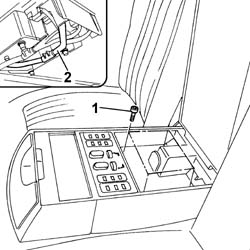
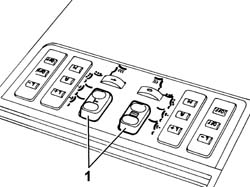
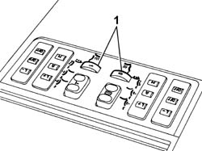

7050B26 REAR SEAT ARMREST PUSH-BUTTON PANEL SWITCH (1) - R.R.
- Path
- Procedures > 70 FITTINGS > 7050 REAR SEATS > 7050B REAR SEAT HEAD RESTRAINT/ARM REST > 7050B26 REAR SEAT ARMREST PUSH-BUTTON PANEL SWITCH (1) - R.R.
- Kind
- repair procedure (removal / refitting; the operation number is the code)
- Applies to
- all engines; all production periods
- Interactive page
- https://sloeber94.github.io/elrnDB-lThss/en/#/841003027
Applies to: all engines; all production periods
 Removing
Removing
 Refitting
RefittingFor the front seat adjustment or sun blind movement switch:
Disconnect the negative battery terminal.
Open the rear armrest flap.
1. Undo the armrest insert retaining bolts.
2. Move the armrest insert aside and disconnect the electrical connections for the front seat adjustment or sun blind movement switch.

Applies to: all engines; all production periods
1. Remove the switch concerned.

Applies to: all engines; all production periods
For the heating adjustment switch:
Disconnect the negative battery terminal.
Open the rear armrest flap.
1. Undo the armrest insert retaining bolts.
2. Move the armrest insert aside and disconnect the electrical connections for the heating adjustment switch.
Applies to: all engines; all production periods
1. Remove the switch concerned.

Applies to: all engines; all production periods
Refitting
RemovingFor both switches:
Place the switch in position.
Connect the electrical connections for the armrest switch.
Fit the rear armrest insert.
Tighten the fixing bolts.
Connect the negative battery terminal.